Assemble your track
Lay the parts on a padded bench in the order they will hang. Work with the light string unplugged.
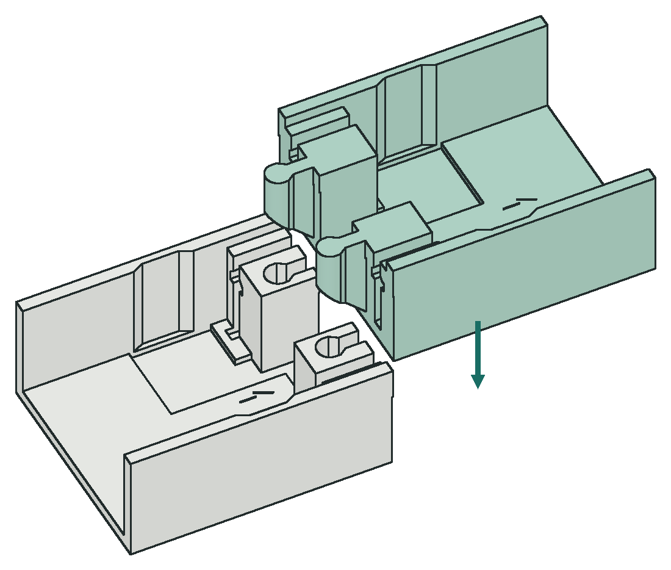
| Lay out one set for… | Parts to put beside it |
|---|---|
| Each puck | 1 turn-to-lock ring + 1 ring stop pin. The puck comes from your Festavia string. |
| Each seam | 2 splice bars + 2 barbed cross pins. A run with N sections has N − 1 seams. |
| Each receiver | 1 soffit bracket + 1 sliding lever + 1 bracket stop pin + 2 exterior screws. |
| Each straight run | 2 end caps, 1 gate per cap, and 2 exterior screws per cap. Match each gate to the cable route. |
| Optional cable route | Cable box, power-supply cradle, flat-wire or round-cord clips. See pages 6–7. |
Find your starting end
Stand facing the installation. The outside face of the left cap is zero. Lay section 1 there. Read the engraved numbers in order with every arrow pointing the same way. The open channel faces you on the bench and faces the soffit after lifting.
Seat and lock each puck
Look into the open back throughout these four steps. The lens faces the padded bench.
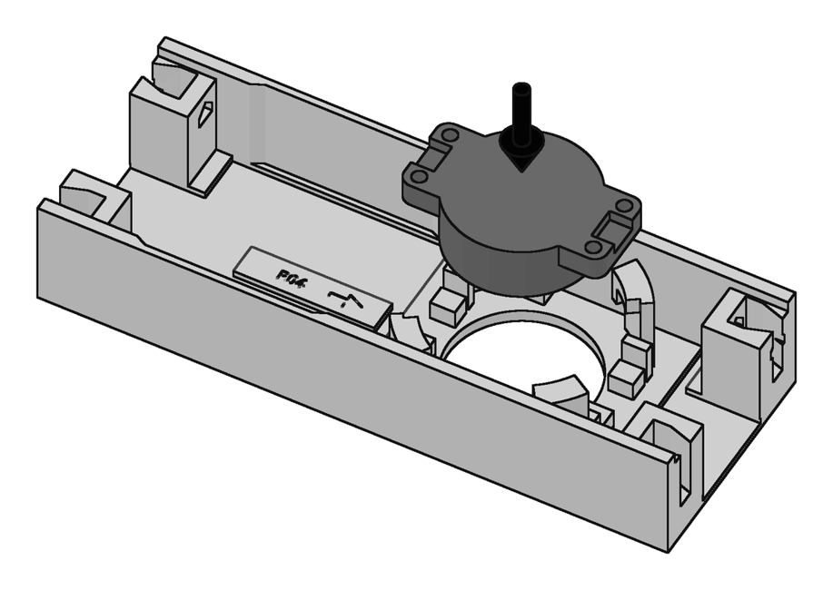
1 Lower the puck
Guide the lens through the circular opening. Seat both ends of the puck housing flat in the holder.
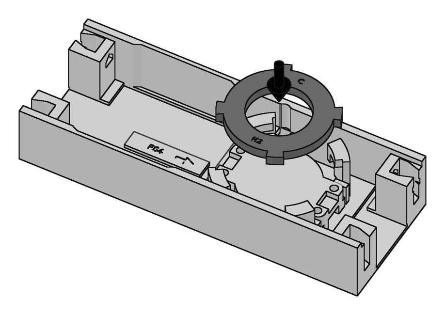
2 Drop the ring flat
Align the tabs with the gaps around the holder. The ring should settle level over the puck.
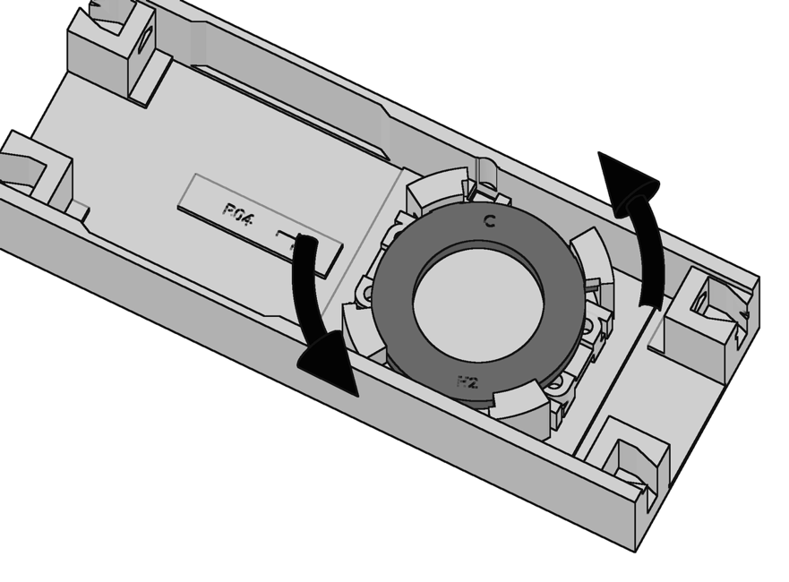
3 Turn 20°
Viewed from the open back, turn the ring counterclockwise until it meets the stop.
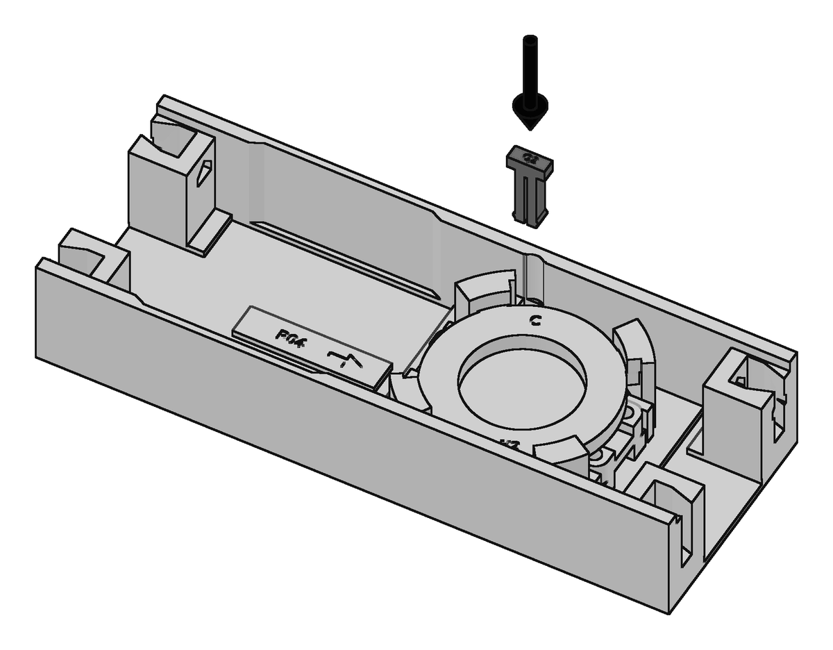
4 Fit the ring stop pin
Press the small stop pin into its guide until it catches. Check that the ring cannot back out and the lens sits evenly.
Lock each joint
The two splice bars bridge the seam. Two separate pins capture them along the sidewalls.
5 Lower the next section
Keep the left section still. Lower the next section’s two left tongues vertically into the two right sockets of the section already down. Keep the faces level.
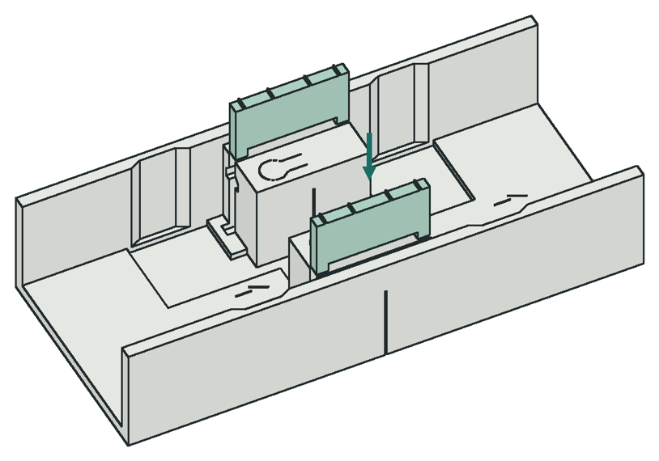
6 Seat both splice bars
Press one bar into each side slot, legs down. Each bar spans the seam with one leg in each section. Leave the designed 0.4 mm seam in place.
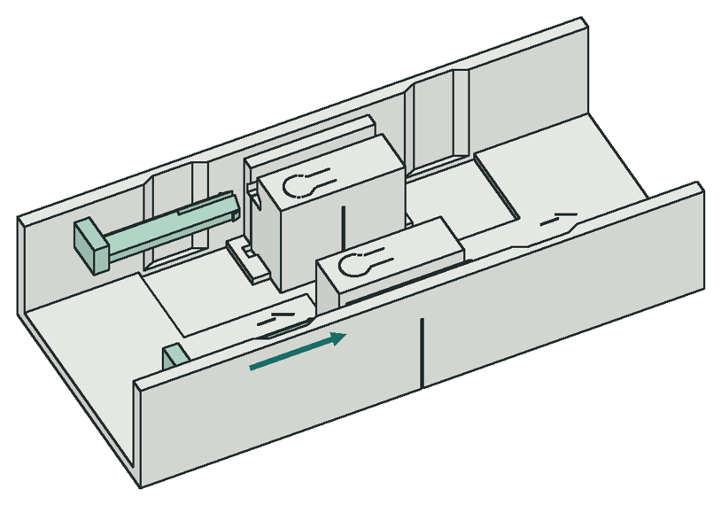
7 Slide both pins in
Work from the same numbered section for both pins. Slide each pin lengthwise in its own wall until its barbs catch. Check both heads and both bars.
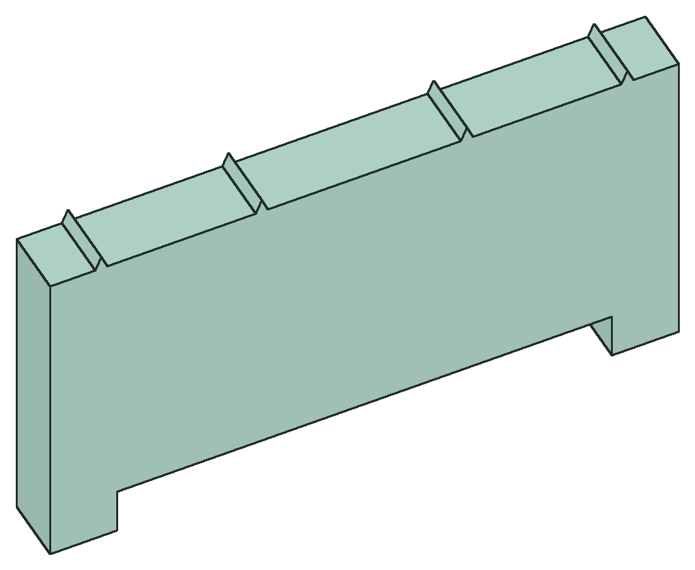
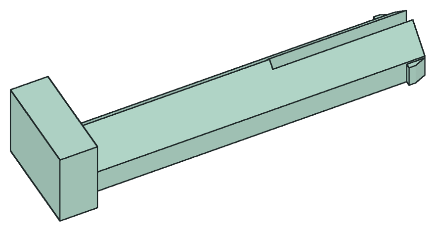
Cap the run and mark the brackets
Use the assembled run itself as a measuring tool. This works with any MakerWorld download.
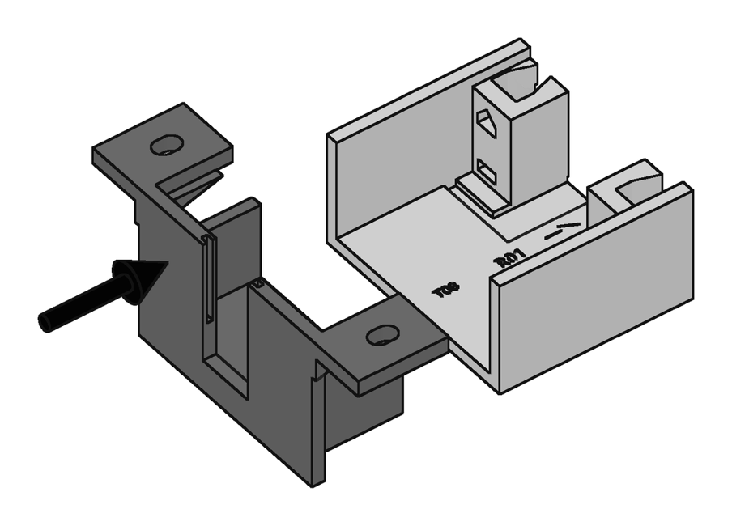
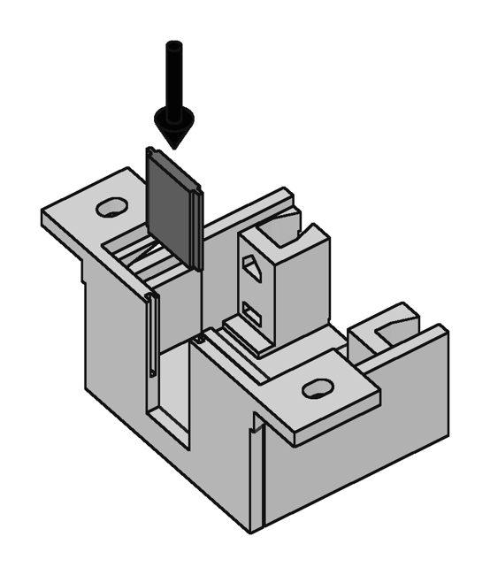
8 Fit the caps and gates
Slide a cap fully onto each end. Fit a slotted wire gate wherever cable enters or exits. Use a blank gate at a closed end. Keep factory connectors accessible.
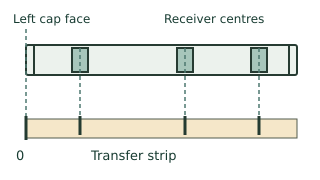
9 Transfer receiver centres
Lay a nonstretch strip along the dry-assembled run. Mark the outside face of the left cap as zero, then each receiver centre. Transfer the strip to sound backing from the same zero, without flipping it. A desktop kit also gives these centres in its layout.
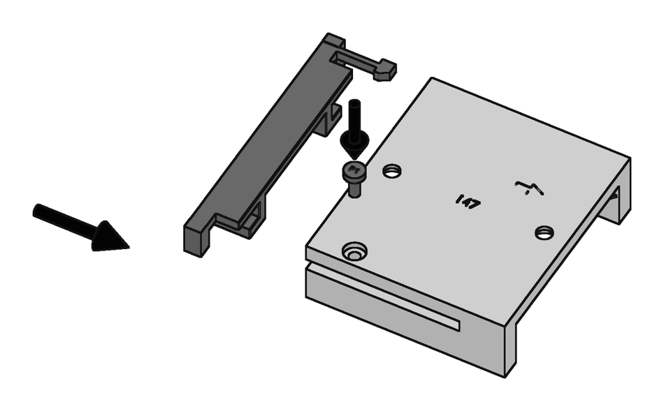
10 Prepare every bracket
Slide the lever in from its open end. Fit its small bracket stop pin from the soffit side before screwing the bracket up. Open the lever. Align bracket and track arrows, centre it on its mark and mark its two holes.
Lift, latch and check
Support the span with enough help to keep it straight. Leave all bracket levers open until every receiver is engaged.
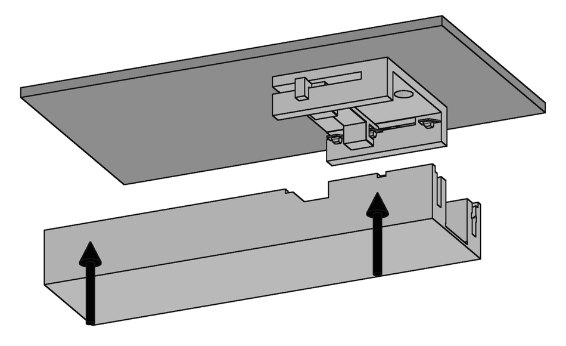
11 Lift straight up
Raise the track evenly into the brackets. If one receiver misses, lower the run and reposition that bracket.
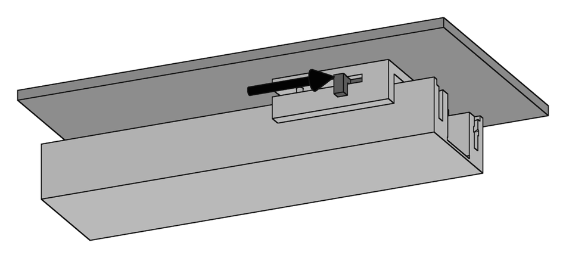
12 Close each lever
Slide the lever about 20 mm until its pawl clicks. Support the track while checking that every lever stays locked and every receiver is captured.
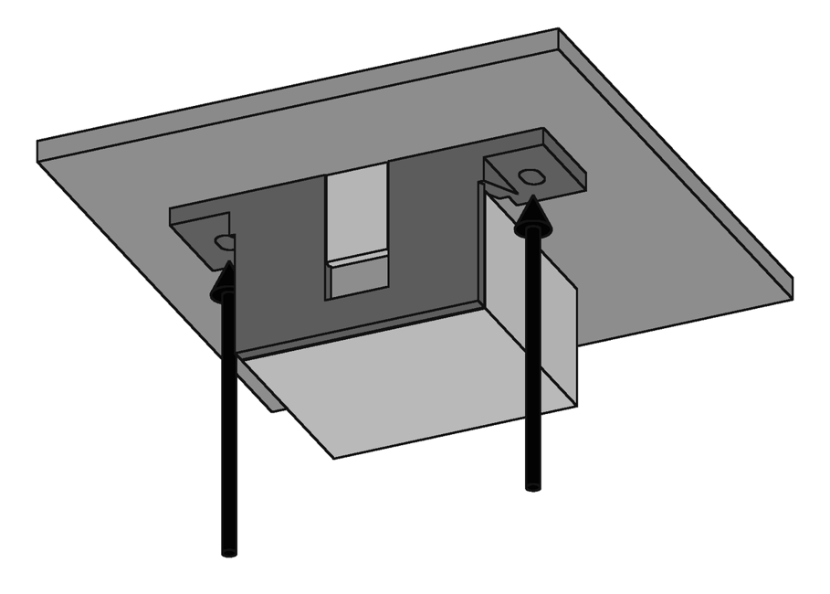
13 Fasten both ends
Screw both ears of each cap into the backing. Check all pucks, pins, gates and cable clearance. Power the lights using their normal Hue setup.
Optional · route the cable
Use the small rectangular box where the flat light cable has surplus length. Place clips along your actual route between the run, the cable box and the supply.


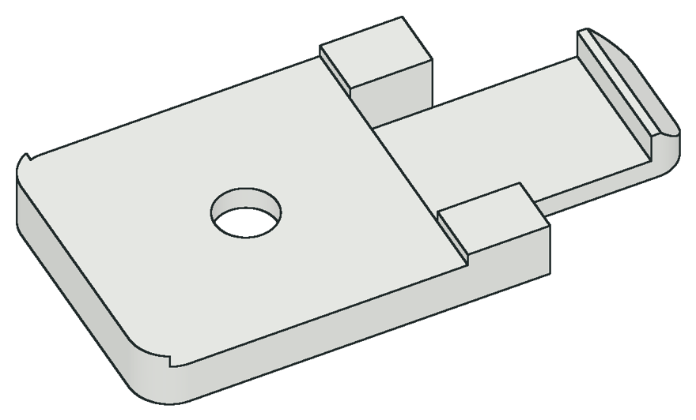
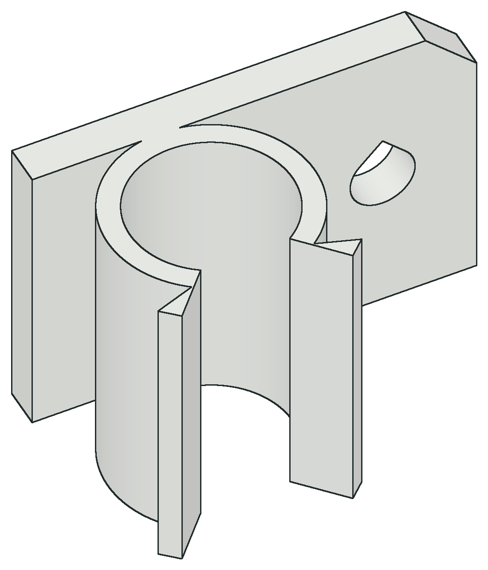
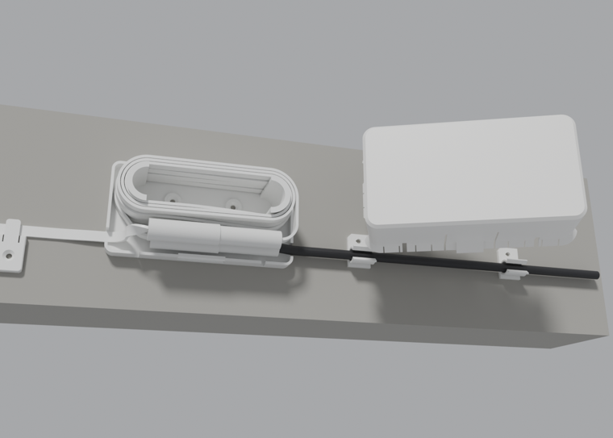
1 · Choose the route with the power unplugged
Mark the low-voltage cable entry at the track’s wire gate. Lay the actual cable along the surface, including turns and loose service loops, and count the clips you need. Place them on flat backing where the fastener clears the wire.
2 · Mount the rectangular base
Orient its drains down. Use two exterior #6 screws through the bosses into suitable backing. Keep the hooks and both side exits clear. Open the factory low-voltage connector if needed to lay the wire in place.
3 · Wind and close
Loop the excess flat cable loosely around the two hooks. Keep the connector clear of the snap fingers. Start with the existing end slots. For an alternate exit, remove only the needed scored lid panel with the lid off the box and trim the edge smooth. Prefer a bottom or end exit. Press the lid straight onto the base until both fingers catch. Flex the thumb tabs out to release.
4 · Clip the exposed lengths
Use one exterior #6 screw per clip. On a vertical face put the fixed ears under the flat cable, then slip it sideways under the sprung arm. Press a compatible round cord into the round clip from the open side. Leave the jackets round and unpinched.
Optional · fit the supply cradle
The arched unit uses its own wall plate, two saddle ties and a removable cover. The cover and small rectangular cable-box lid fit different bases.

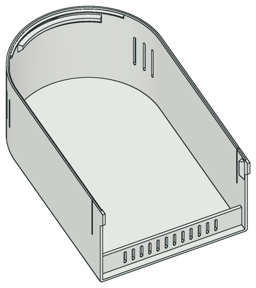
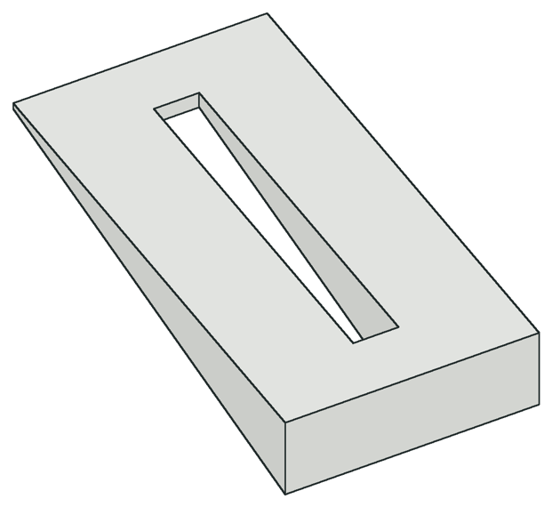
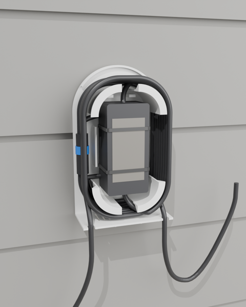
1 · Check your supply and location
The reference brick is 131 × 62 × 48 mm. The CAD fit check spans 128–134 × 60–64 × 45–51 mm. Compare the actual brick, lead exits and clearances. Preserve access to the factory plug and outdoor receptacle cover. Leave about 10 mm above the arch and finger room at both lower sides.
2 · Fix the base and cradle the brick
Use the two mounting slots and exterior #8 pan- or washer-head screws into suitable backing. On stepped siding, use a shim at an unsupported screw to keep the backplate flat. Thread two releasable ties through the saddle tunnels and seat the unplugged factory brick with its mains end up and low-voltage end down.
3 · Route the leads
The base has separate floor slots. Facing the mounted base, route the outlet lead on the right and the low-voltage lead on the left. Leave a downward drip loop before the outlet. Keep the factory connector accessible, the vents and drains clear, and enough slack to remove the cover.
4 · Fit or release the cover
For a dry fit, hold the cover about 9 mm high, push it flat against the base and lower until both side latches click. Reach under the two lower side tabs and push them outward, lift about 10 mm and pull forward to remove.